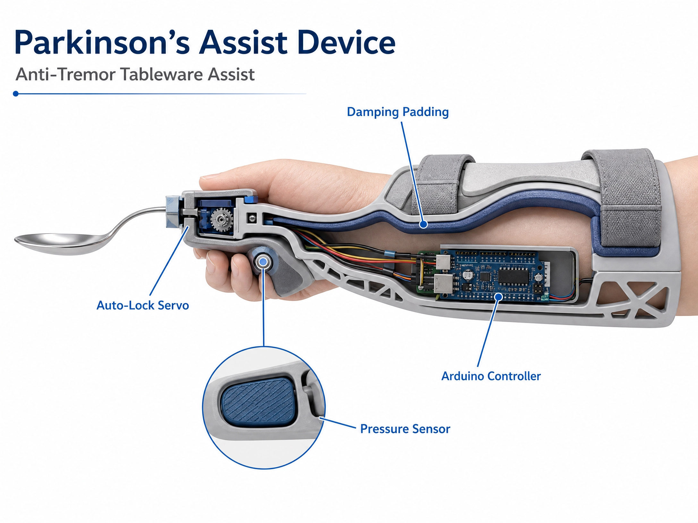
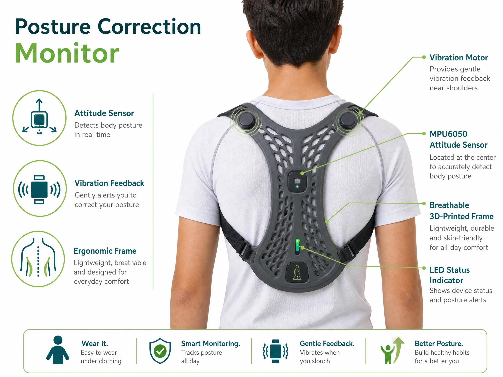
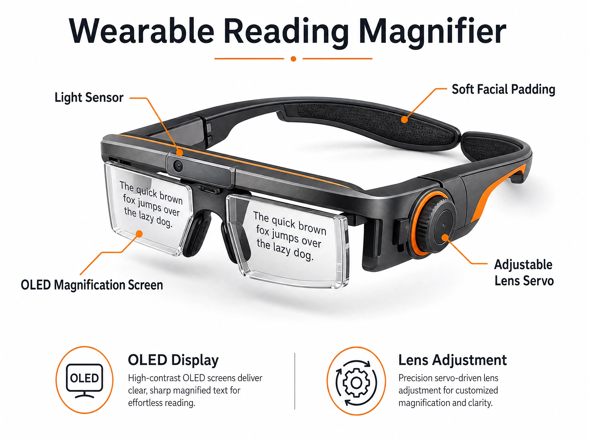

Three Project Options
1. Parkinson’s Anti-Tremor Tableware Helper

This arm-mounted device is designed to assist individuals with Parkinson's disease in maintaining independence during meals. It has a soft foam padding, a contact sensor and a DC motor. The padding gently cradles the user's arm, minimizing involuntary hand movements while eating. A contact sensor continuously monitors grip strength. When the strength fall below a predetermined value , the motor activates to lock chopsticks or spoons in place, preventing them from slipping.(the figure is generated by ai)
2. Posture Correction Wearable Device

Designed to promote better posture, this back-mounted device integrates position sensors, vibration motors, and indicator lights. If the monitored angles exceed the healthy limits, the sensors trigger the vibration motors. These motors then generate gentle vibration signals to discreetly alert the user to adjust their posture. This device aims to alleviate physical strain often associated with prolonged screen time and desk work.
3. Adjustable Head-Mounted Eye Protection Magnifier

This wearable optical device is inspired by my personal eye health experience. Due to long hours of studying and poor reading posture, I have developed severe myopia and frequent eye strain. A large number of teenagers have the same problem of leaning too close to books and electronic screens when studying, which leads to continuous deterioration of eyesight. This adjustable head-mounted magnifier can standardize the user's reading distance, avoid excessive eye focusing pressure, and greatly reduce eye fatigue during long-term study. Its lightweight and adjustable frame design ensures comfortable wearing for a long time, effectively helping teenagers protect their eyesight and improve learning posture.
My Preferred Project
Among these three proposals, I will prefer the first one.